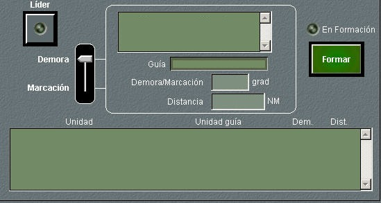

Dinámica de Submarinos
Mástiles
Mediante este panel de detalle, el operador puede izar o arriar los mástiles del submarino. Según los mástiles izados, se muestra también indicadores de qué equipos tienen su antena lista para operar, en función de la asignación de equipos a mástiles de la unidad (ver Manual de Preparación – Preparación de Unidades). Los leds se encenderán en amarillo mientras el mástil correspondiente esté izándose o arriándose, y en verde cuando se encuentra completamente izado.
Cinemática

En este panel se muestra la situación de la unidad propia y la base en la que se encuentra, en el caso de que estuviera en una, así como el rumbo, el ángulo del timón, la velocidad y la profundidad. También se muestra el nivel de daños que afectan al timón, a la velocidad y a la profundidad.
Este panel permite realizar las siguientes maniobras:
- Cambio de rumbo mediante orden de rumbo a seguir: Introduciendo los valores deseados de rumbo, y de ángulo de timón en los campos correspondientes, al pulsar el botón Petición el submarino comienza a virar, teniendo en cuenta el ángulo de timón introducido y las características del submarino (tabla de giro) hasta que alcanza el rumbo pedido. A partir de este momento, el submarino navega a rumbo constante, respecto al agua, hasta que se ordene otra maniobra.
- Cambio de rumbo mediante orden de timón: Introduciendo un ángulo de timón en el campo correspondiente, al pulsar el botón Orbitar, el submarino comenzará a virar, teniendo en cuenta el ángulo de timón introducido y las características del submarino (tabla de giro), de forma continua hasta que se introduzca un valor cero de ángulo de timón, o hasta que se realice una petición de rumbo, en cuyo caso el ángulo de timón se pone automáticamente a cero cuando se alcanza el rumbo pedido.
- La unidad está en Base
- La unidad está realizando alguna maniobra incompatible con el cambio de rumbo.
- El timón está destruido o la unidad ha agotado su combustible.
- Cambio de velocidad: Introduciendo el valor de velocidad deseado en el campo correspondiente, al pulsar el botón Petición, el submarino comenzará a variar su velocidad, de acuerdo con sus características (tabla de aceleración), hasta alcanzar la velocidad respecto al agua deseada. Esta petición no se atenderá si se da alguna de las siguientes condiciones:
- La unidad está en Base
- La unidad está realizando alguna maniobra incompatible con el cambio de velocidad.
- La maquinaria está destruida o la unidad ha agotado su combustible.
- Cambio de profundidad mediante alerones: Introduciendo el valor de profundidad deseado en el campo correspondiente, al pulsar el botón Petición, el submarino comenzará a variar su profundidad, de acuerdo con sus características (régimen de ascenso / descenso), hasta alcanzar la profundidad deseada. Pulsando el botón Perisc. se rellena el campo de profundidad pedida con el valor de profundidad de periscopio.
- La unidad está en Base
- La unidad está realizando alguna maniobra incompatible con el cambio de profundidad.
- La maquinaria está destruida o la unidad ha agotado su combustible.
- Cambio de profundidad mediante el empleo de burbuja: El operador podrá solicitar la creación de la burbuja en proa o en popa. La burbuja producirá una inclinación de 45º hacia arriba o abajo según se cree a proa o popa, una vez transcurrido un tiempo (configurable en Galeon.ini) desde que es solicitada. Durante este tiempo, el tamaño de la burbuja va aumentando y el submarino va cambiando su inclinación de forma linealmente proporcional al tiempo transcurrido, de forma que al final de este tiempo el tamaño de la burbuja es el total y su inclinación es de 45º. El submarino cambiará de profundidad según su velocidad y la inclinación que tiene en cada momento. Cuando el operador cancela esta maniobra o una vez que alcanza los 45º, el submarino suelta la burbuja que será detectable por sonares activos. Esta forma de cambiar la profundidad tiene la ventaja sobre el empleo de alerones de que puede alcanzar una inclinación mayor (45º) por lo que el cambio de profundidad es más rápido.
Ambas peticiones de cambio de rumbo no serán atendidas si se da alguna de las siguientes condiciones:
La petición de cambio de profundidad no se atenderá si se da alguna de las siguientes condiciones:
La velocidad, el timón y el ángulo de ascenso / descenso solicitados pueden ser introducidos como un tanto por ciento del máximo de la unidad mediante las barras deslizantes.
Combustible / Miscelánea
Este panel de detalle agrupa las siguientes funciones:
- Combustible: Muestra los valores de niveles de combustible y batería en tanto por ciento respecto del nivel máximo, incluyendo dos led que indican cuando entran en reserva, los consumos horarios y la autonomía en millas y horas a la velocidad actual.
- Misceláneos: Permite realizar las siguientes operaciones:
- Encender y apagar las luces de navegación.
- Lanzar Bombas de Humo, y consultar la cantidad remanente en pañol.
- Petición de recarga de batería, eligiendo, mediante una barra deslizante el tipo de carga (Lenta, Normal y Rápida), así como interrumpir la carga (posición No). Tanto para iniciar la carga como para interrumpirla, pulsar el botón Petición. Esta maniobra solo puede realizarse cuando la unidad se encuentra fuera de Base, estando en superficie o con el snorkel izado, y con el combustible no agotado.
- Izar / Arriar el Snorkel. Al pulsar el botón se inicia una cuenta atrás de tiempo predeterminado para la unidad para hacer efectiva la operación. Para izar el snorkel es necesario que la unidad esté fuera de Base, que su velocidad sea inferior a la máxima permitida para esta maniobra y que su profundidad sea inferior a la de la longitud del snorkel. También es necesario que el estado del mar sea inferior a 5 (valor configurable en Galeon.ini).
- Establecer la condición de silencio entre cuatro posibles (Ninguno, Vigilancia, Combate y Máximo). Al elegir una condición, usando la barra deslizante, y pulsar el botón Petición, se inicia una cuenta atrás de tiempo predeterminado para cada unidad para hacer efectivo el cambio.
Estas funciones sólo están disponibles cuando la unidad se encuentra fuera de Base.
Maniobras
El panel de detalle de la opción Maniobras presenta cinco solapas en las que se puede elegir una de las siguientes maniobras:

Interceptación: En el panel de detalle de Interceptación se permite la introducción de todos los datos necesarios para calcular la maniobra de interceptación entre una unidad origen (que puede ser la propia o la que esté en Marca en la pantalla táctica) y una unidad objetivo.

Al pulsar el botón Unidad Propia o P. Marca, se toma como unidad origen la unidad propia o la que esté en Marca, respectivamente. Los datos de rumbo, velocidad, demora y distancia se adquieren automáticamente.
Al pulsar el botón Blanco, se toma como unidad objetivo la que esté en Hook en la pantalla táctica, o bien su posición en el caso de que el Hook no esté sobre ninguna unidad. Los datos de rumbo, velocidad, demora y distancia se adquieren automáticamente.
Al pulsar el botón Calcular, se calcula la interceptación, y si tiene solución, se proporciona el tiempo que tomaría la maniobra y el rumbo que debería tomar la unidad origen. Además, en la pantalla táctica se dibuja un esquema de la maniobra, presentando el punto de interceptación calculado.
Si la unidad propia se ha seleccionado como origen, se puede ejecutar automáticamente la maniobra de interceptación, pulsando el botón Interceptar cuando existe solución.
Puerto: Esta maniobra se utiliza para atracar en un puerto o para zarpar desde él. A continuación se describe cómo se ejecuta cada una de estas maniobras.

- Para atracar en un puerto se elige una unidad base de la lista, se introducen una velocidad y se pulsa el botón Retorno. La unidad modificará automáticamente su rumbo, se dirigirá a la unidad elegida a la velocidad y profundidad solicitadas, y atracará en ella. Esta petición no será atendida si se da alguna de las siguientes condiciones:
- La unidad está en Base
- La unidad está realizando alguna maniobra incompatible con esta.
- La maquinaria o el timón está destruidos o la unidad ha agotado su combustible.
- La maniobra es cinemáticamente posible, y no implica colisión.
- Se apagan todos los sensores.
- Se apagan todas las comunicaciones.
- Se inicia Maniobra de Reabastecimiento de la unidad.
- Para zarpar desde una base, se introduce el rumbo y la velocidad y se pulsa el botón Zarpar, que sustituye al botón Retorno cuando el submarino está en base. Transcurrido un tiempo predeterminado, la unidad zarpará y tomará el rumbo, la velocidad y profundidad solicitados. Para realizar esta maniobra, la unidad debe estar en Base, no tener destruidos la maquinaria ni el timón, y disponer de combustible.
Si durante la maniobra se pulsa de nuevo el botón Retorno (cuya leyenda se ha sustituido por Cancelar) se cancela la maniobra, quedando la unidad con el rumbo y velocidad que tiene en ese instante.
Cuando la unidad completa el atraque en la base, de forma automática se ejecutan las siguientes acciones:
Las unidades que se muestran en la lista para poder seleccionarlas como base, son aquellas que tienen capacidad de portar buques, y que son del mismo bando que la unidad propia. Además, una unidad puede seleccionar con el Hook cualquier unidad que detecte por sus sensores, y de la que identifique su numeral, para solicitarla como base y entrar en ella.
Formar: Esta maniobra se utiliza para crear una formación con varias unidades. A continuación se describen las acciones que pueden realizarse desde esta opción.

- Hacerse líder de una formación. Para ello se pulsa el botón Líder y a continuación el botón Formar. El indicador Led En Formación se encenderá en color verde. Esta petición no será atendida si la unidad está en Base.
- Integrarse en una formación. Para ello se selecciona un guía en la lista superior, en la que deben aparecer todas los submarinos del mismo bando que se encuentren a menos de 20 millas (configurable en Galeon.ini), a continuación se introduce una demora o marcación y una distancia, seleccionando en la barra de desplazamiento la opción Demora o Marcación. Al pulsar el botón Formar, la unidad tratará de incorporarse a la formación navegando a la demora / marcación y distancia indicada respecto a la unidad guía. El indicador Led En Formación se encenderá en color amarillo durante el tiempo que la unidad tarde en alcanzar la demora y distancia indicadas, y pasará a color verde cuando lo haya conseguido. Esta petición no será atendida si se da alguna de las siguientes condiciones:
- La unidad está en Base
- La unidad está realizando alguna maniobra incompatible con esta.
- La maquinaria o el timón está destruidos o la unidad ha agotado su combustible.
Pulsando de nuevo el botón Formar (cuya leyenda se ha sustituido por Cancelar), se cancela la maniobra, manteniendo la unidad el rumbo y velocidad que tiene en ese instante.
Repostar / FAS: Esta maniobra se utiliza para repostar combustible desde la base en la que se encuentra o desde otra unidad, que debe tener esta capacidad.

- Cuando la unidad está en base, en este diálogo sólo se podrá seleccionar como unidad suministradora la unidad que actúa como base. Pulsando Repostar, se inicia el reabastecimiento de combustible. Pulsando de nuevo el botón Repostar, antes de que finalice el reabastecimiento, se cancelará la maniobra.
- Cuando la unidad no está en base, para repostar mientras navega desde otra unidad (maniobra FAS) se elige la unidad desde la que se quiere repostar en la lista y se pulsa el botón Repostar. La unidad se dirigirá hacia la unidad elegida, y cuando esté a la distancia apropiada navegará junto a él y realizará el reabastecimiento. Esta petición no será atendida si se da alguna de las siguientes condiciones:
- La unidad está en Base
- La unidad está realizando alguna maniobra incompatible con esta.
- La maquinaria o el timón está destruidos o la unidad ha agotado su combustible.
- La maniobra no es cinemáticamente posible.
Mientras la unidad se dirige hacia la unidad elegida para repostar, el botón Repostar permanece amarillo. Una vez que inicia el reabastecimiento, pasa a verde. Pulsando de nuevo el botón Repostar, antes de que finalice el reabastecimiento, se cancelará la maniobra y la unidad conservará el rumbo y la velocidad que tiene en ese instante.
Maniobras Especiales: Estas maniobras incluyen las Operaciones Especiales y Fondeo. A continuación se describe cada una de ellas.
- Operaciones Especiales: consisten en la salida de buzos por los tubos lanzatorpedos. Desde el punto de vista del simulador, el único efecto de esta maniobra es la incompatibilidad con otras maniobras durante su ejecución. Para ejecutarla, la unidad debe estar fuera de base y no estar realizando otra maniobra incompatible con ésta.
- Fondear: Al pulsar el botón Fondear se produce el fondeo de la unidad. Esta petición no será atendida si se da alguna de las siguientes condiciones:
- La unidad está en Base.
- La unidad está realizando alguna maniobra incompatible con esta.
- La unidad no está en superficie.
- La sonda de fondeo no es superior al límite máximo definido para el simulador.
Una vez fondeada la unidad, si se pulsa de nuevo el botón, se cancela la maniobra.
Los cambios en las condiciones cinemáticas y las maniobras que admiten las unidades cumplen la tabla de incompatibilidades especificada en Modelística – Plataformas – Maniobras – Incompatibilidad de Maniobras.